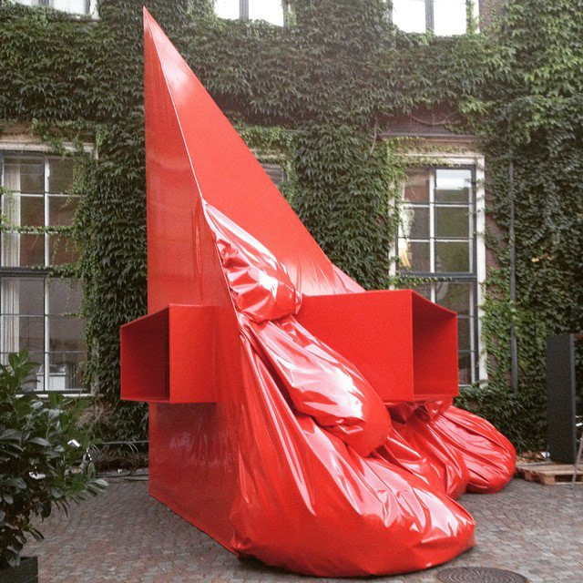
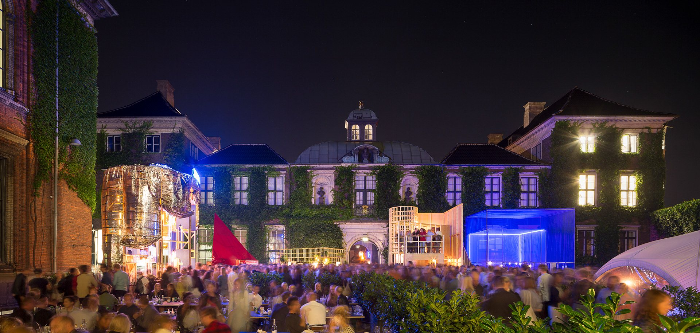
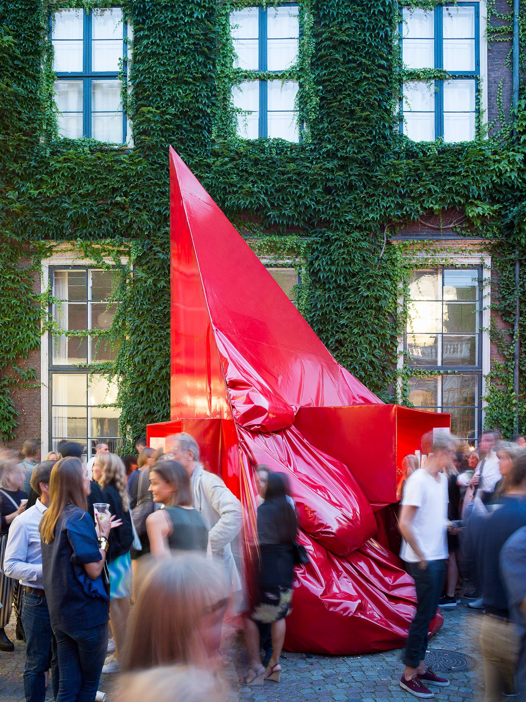
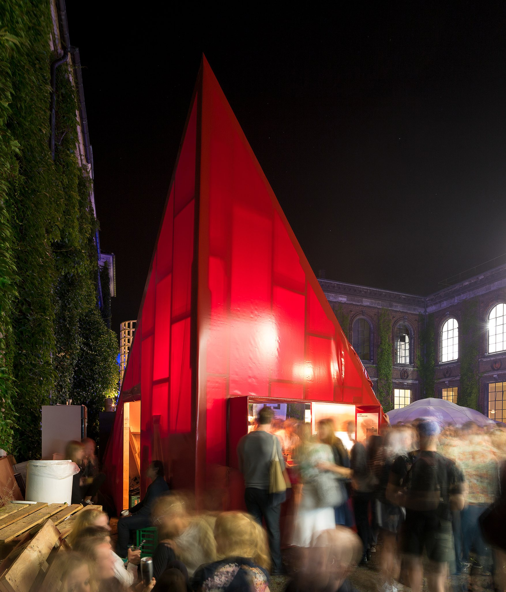
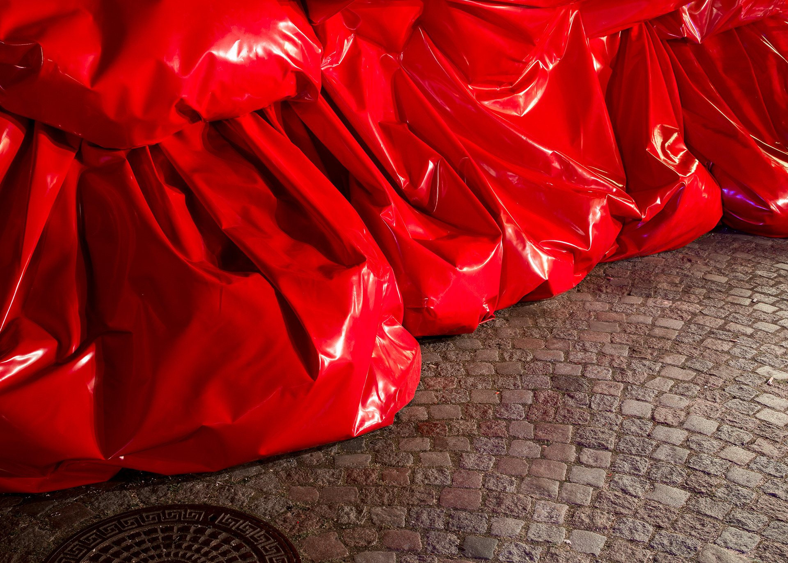
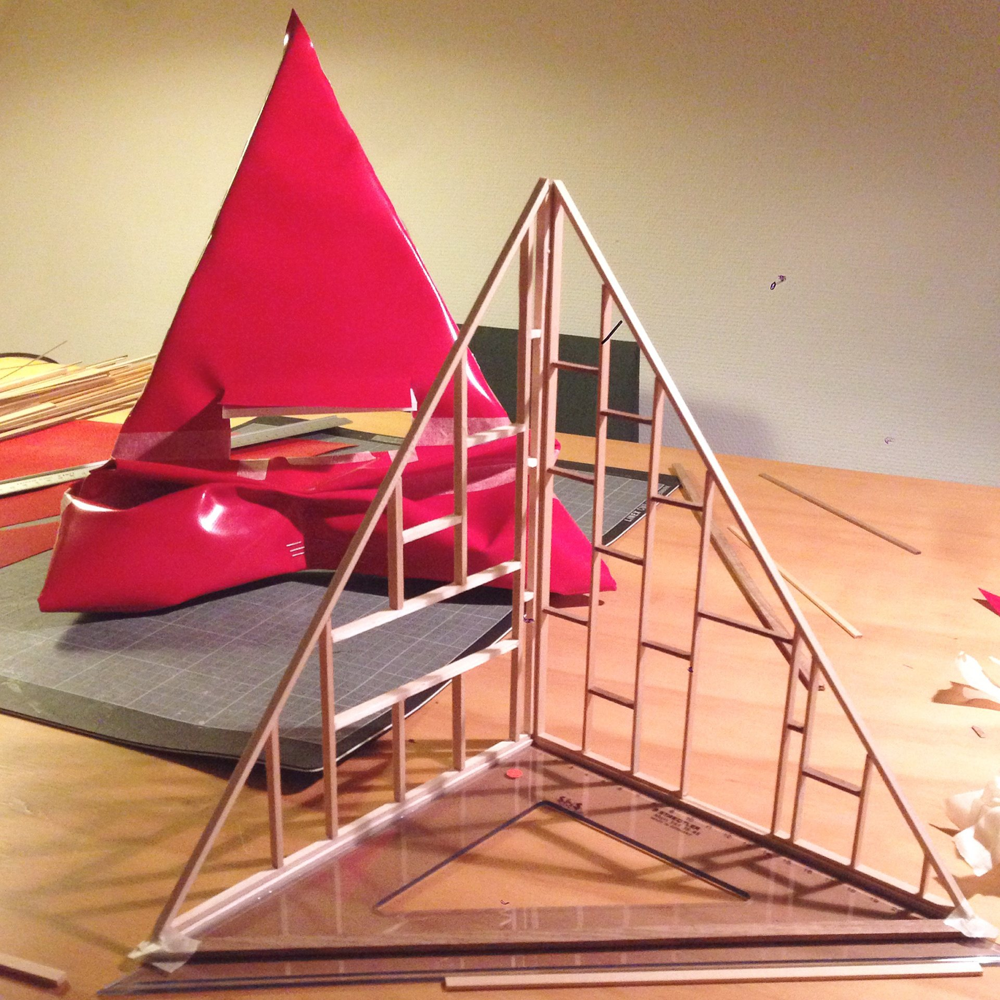
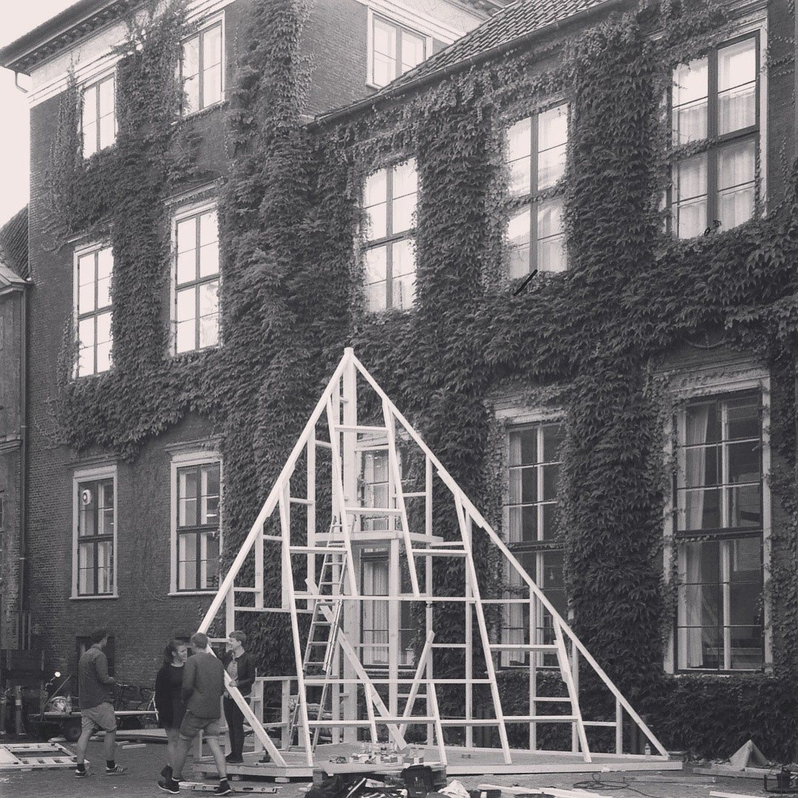

CHART ART 2015
installation
the fall / installation
in collaboration with søren aagaard
installation and burger stand. chart art, danish royal academy of fine arts, copenhagen
'the fall'
(2015)
for Chart Art Fair
in collaboration with
Søren Aagaard
.
first prize, judges: bjarke ingels, ralf hay
.
huge thanks to all our friends who made it happen:
anders aastrup
mathilde lesénécal
victor perlheden
emil bergmann
tobias fennö sandberg
therese linnea ranild
.
curated by
jamiee williams
.
supported by
dreyers fond
.
photos by
hampus berndtson






